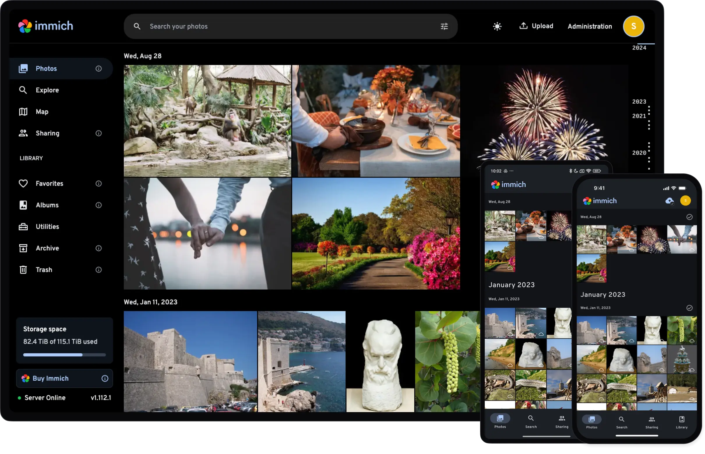

Free. Unlimited. Encrypted.
DaemonClient — free, unlimited and zero-knowledge cloud storage ecosystem. A place where your data is only yours, never for statistics or training AI.
It isn't our cloud.
It's yours.
Storage is metered because you're renting space on someone else's servers. DaemonClient flips that. It deploys straight into infrastructure you already pay nothing for — your Telegram, your Cloudflare account.
There's no middleman taking a cut, no datacenter to amortize, no business model that depends on your files. So there's no cap to hit and no invoice to dread.
Split into shards.
Sealed before they leave.
Every file is broken into encrypted chunks on your device, before a single byte touches the network. Only you hold the keys.
The shards scatter across your own storage — meaningless on their own, and unreadable to anyone, including us. Zero-knowledge isn't a setting here. It's the architecture.
Your files. Chunked, sealed, scattered.
Free, unlimited, end-to-end encrypted file storage on infrastructure you own — a private alternative to Google Drive. No fees. No snooping. No limits.
- AES-256-GCM encryption, client-side before upload
- Files chunked into 19 MB blocks, scattered across your storage
- Web dashboard + CLI for macOS, Linux & Windows
Every memory,
post-quantum encrypted.
Unlimited photo and video backup, free. Your library lives in your own Telegram and Cloudflare — encrypted on-device before it ever leaves your phone.
- Auto-backup the moment you shoot — no cables, no quotas
- Timeline, albums, map & private sharing
- Never scanned, never analyzed, never sold

Web, iPad & iPhone — uses the Immich app · set up from the web first
Start with Drive or Photos.
No credit card. No subscription. Just your cloud — actually yours.